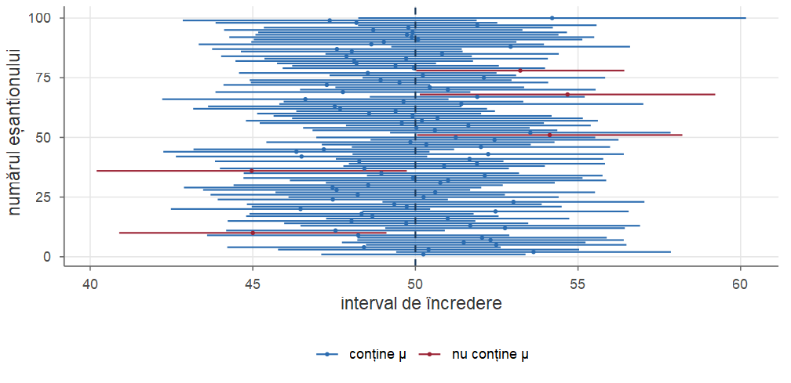
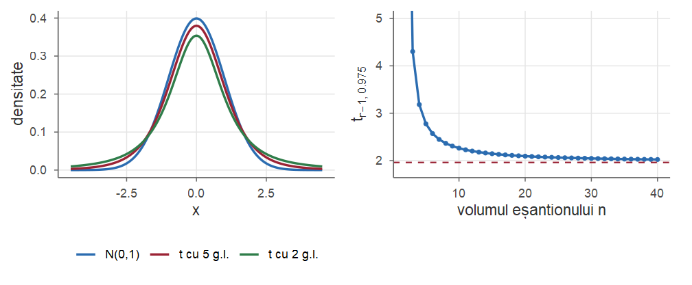
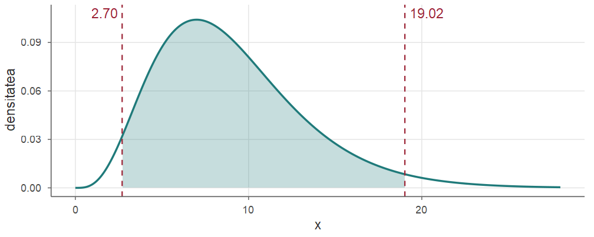
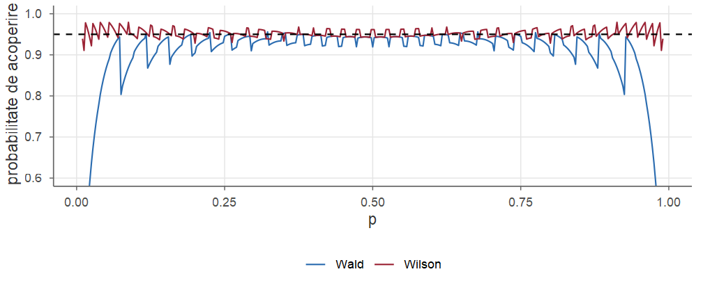
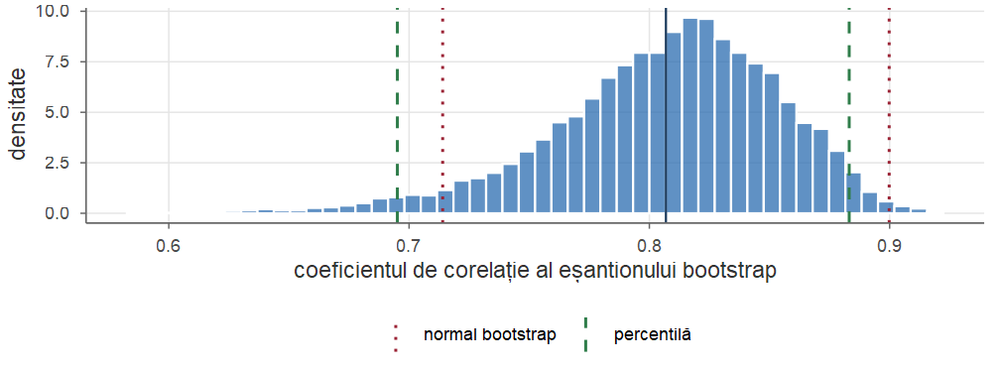
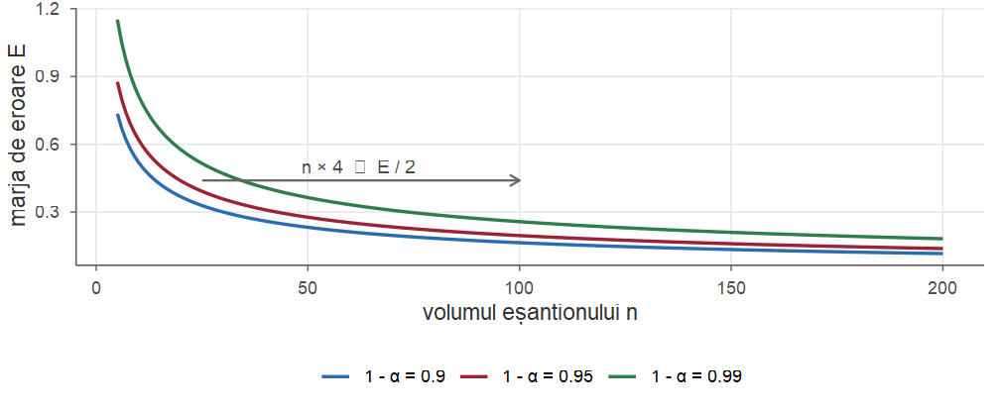

Probabilități și Statistică · Cursul 12
Universitatea din București · Facultatea de Matematică și Informatică · 2026–2027
| Partea | Conținut |
|---|---|
| I | Noțiunea de interval de încredere; interpretare; metoda pivotului |
| II | Populații normale: media (\(\sigma\) cunoscut / necunoscut), varianța |
| III | Două populații; intervale asimptotice; proporții; intervale fără model (Hoeffding, bootstrap) |
| IV | Volumul eșantionului; intervale unilaterale; R; exerciții |
La finalul cursului, studenții vor putea să:
t.test, prop.test, …).Teorema lui Fisher (Teorema 23 din Cursul 8): dacă \(X_1,\dots,X_n\sim\Norm(\mu,\sigma^2)\) \(\iid\), \[ \Xbar\sim\Norm\Big(\mu,\frac{\sigma^2}{n}\Big),\qquad \frac{(n-1)S_n^2}{\sigma^2}\sim\chisq{n-1},\qquad \Xbar\indep S_n^2,\qquad \frac{\Xbar-\mu}{S_n/\sqrt n}\sim\Stud{n-1}. \]
Convenția cuantilelor (ca în R, cuantile inferioare, Definiția 22 din Cursul 8): \(\Phi(z_\alpha)=\alpha\) (qnorm(alpha)), \(t_{k;\alpha}\) = qt(alpha, k), \(\chi^2_{k;\alpha}\) = qchisq(alpha, k), \(F_{m,n;\alpha}\) = qf(alpha, m, n). De exemplu, \(z_{0.975}\approx1.96\), \(z_{0.025}=-z_{0.975}\).
Răspunsul: raportăm un interval calculat din date, care, prin construcție, conține valoarea necunoscută „în majoritatea cazurilor” — cu o probabilitate fixată dinainte, de exemplu \(0.95\).
Pe tot parcursul cursului, \(X_1,\dots,X_n\) este un eșantion aleator (\(\iid\)) dintr-o populație cu repartiția \(F_\theta\), \(\theta\in\Theta\), iar \(x_1,\dots,x_n\) sunt valorile observate. Notăm \[ \Xbar=\frac1n\sum_{i=1}^n X_i,\qquad S_n^2=\frac{1}{n-1}\sum_{i=1}^n (X_i-\Xbar)^2 . \]
Planul cursului: definiția și interpretarea \(\to\) metoda pivotului \(\to\) intervale pentru populații normale (teorema lui Fisher) \(\to\) intervale asimptotice (TLC), inclusiv pentru proporții \(\to\) intervale fără model (Hoeffding, bootstrap) \(\to\) volumul eșantionului \(\to\) intervale unilaterale \(\to\) calculul în R.
Greutatea (g) pachetelor umplute de o mașină: \(X\sim\Norm(\mu,\sigma^2)\), cu \(\sigma=2\) cunoscut (caracteristică tehnică), \(\mu\) necunoscut. Cântărim \(n=16\) pachete. Din Cursul 8, \[ \Xbar\sim\Norm\Big(\mu,\frac{\sigma^2}{n}\Big),\qquad\text{deci}\qquad Z=\frac{\Xbar-\mu}{\sigma/\sqrt n}\sim\Norm(0,1). \] Repartiția lui \(Z\) nu depinde de \(\mu\). Prin urmare \[ \PP\big(-1.96\le Z\le 1.96\big)=\Phi(1.96)-\Phi(-1.96)\approx 0.95 . \]
Inegalitățile se pot rezolva în raport cu \(\mu\): \[ -1.96\le \frac{\Xbar-\mu}{\sigma/\sqrt n}\le 1.96 \iff \Xbar-1.96\,\frac{\sigma}{\sqrt n}\le\mu\le \Xbar+1.96\,\frac{\sigma}{\sqrt n}. \] Așadar intervalul aleator \[ \Big[\Xbar-1.96\,\frac{\sigma}{\sqrt n},\ \Xbar+1.96\,\frac{\sigma}{\sqrt n}\Big]=[\Xbar-0.98,\ \Xbar+0.98] \] conține valoarea necunoscută \(\mu\) cu probabilitatea \(0.95\), oricare ar fi \(\mu\). Dacă media observată este \(\xbar=501.3\), obținem intervalul numeric \([500.32,\ 502.28]\).
Fie \(X_1,\dots,X_n\) un eșantion dintr-o populație cu repartiția \(F_\theta\), \(\theta\in\Theta\), și \(\alpha\in(0,1)\). Două statistici \(L=L(X_1,\dots,X_n)\) și \(U=U(X_1,\dots,X_n)\) cu \(L\le U\) formează un interval de încredere pentru \(\theta\) de nivel de încredere \(1-\alpha\) dacă \[ \PP_\theta\big(L\le \theta\le U\big)\ \ge\ 1-\alpha\qquad\text{pentru orice }\theta\in\Theta. \] Dacă are loc egalitatea pentru orice \(\theta\), intervalul are nivelul exact \(1-\alpha\). Valoarea \(\inf_{\theta}\PP_\theta(L\le\theta\le U)\) se numește probabilitate de acoperire. Dacă inegalitatea are loc doar la limită, când \(n\to\infty\), intervalul se numește asimptotic (sau aproximativ).
Probabilitatea din definiție se referă la capetele \(L\) și \(U\), care sunt variabile aleatoare; parametrul \(\theta\) este o constantă (necunoscută). Scrierea \(\PP_\theta(L\le\theta\le U)\) se citește „probabilitatea ca intervalul aleator \([L,U]\) să acopere valoarea fixă \(\theta\)”.
Ilustrare: simulăm 100 de eșantioane de volum \(n=25\) din \(\Norm(50,10^2)\) și calculăm pentru fiecare intervalul de nivel \(0.95\) pentru medie (intervalul Student, Partea a II-a).

În simulare, 5 dintre cele 100 de intervale (roșu) nu conțin \(\mu=50\); în medie ne așteptăm la \(5\) „ratări”.
Repetăm experimentul de \(10000\) de ori și numărăm intervalele care conțin \(\mu=50\). Numărul de ratări din \(100\) de intervale are repartiția \(\Bin(100,\,0.05)\).
set.seed(1)
acopera <- replicate(10000, {
x <- rnorm(25, 50, 10)
ic <- mean(x) + c(-1, 1) * qt(0.975, 24) * sd(x) / sqrt(25)
ic[1] <= 50 & 50 <= ic[2]
})
mean(acopera) # aproape de 0.95
#> [1] 0.9502
round(dbinom(3:7, 100, 0.05), 3) # P(3), ..., P(7) ratări din 100
#> [1] 0.140 0.178 0.180 0.150 0.106Este greșit să spunem, după ce am calculat intervalul \([500.32,\ 502.28]\), că „\(\mu\) se află în \([500.32,\ 502.28]\) cu probabilitatea \(0.95\)”. În abordarea clasică (frecvențială) \(\mu\) nu este o variabilă aleatoare.
Corect: „intervalul a fost obținut printr-o procedură care acoperă valoarea adevărată în 95% din cazuri”.
O afirmație de tipul „\(\PP(\mu\in[a,b]\mid \text{date})=0.95\)” are sens doar în cadrul bayesian, unde se folosesc intervalele de credibilitate (Cursul 11).
Teoria intervalelor de încredere a fost formulată de Jerzy Neyman în 1937, deși intervale de tipul \(\bar x\pm 2\sigma/\sqrt n\) apăruseră informal încă de la Laplace și Gauss. Termenul confidence interval a fost ales deliberat pentru a evita cuvântul „probabilitate” în legătură cu un interval deja calculat.
Un interval de încredere este util dacă este scurt și are un nivel ridicat — cerințe contradictorii: \((-\infty,\infty)\) are nivelul 1, dar nu spune nimic. În exemplul introductiv, intervalul de nivel \(1-\alpha\) este \(\Xbar\pm z_{1-\alpha/2}\,\sigma/\sqrt n\), cu lungimea \[ \ell = 2\,z_{1-\alpha/2}\,\frac{\sigma}{\sqrt n}. \]
Jumătatea lungimii, \(E=z_{1-\alpha/2}\sigma/\sqrt n\), se numește marja de eroare.
Construcția din exemplul introductiv se bazează pe \(Z=(\Xbar-\mu)/(\sigma/\sqrt n)\), care depinde de date și de parametru, dar a cărei repartiție este complet cunoscută.
O funcție \(Q=Q(X_1,\dots,X_n;\theta)\) de eșantion și de parametru se numește cantitate pivotală (sau pivot) dacă repartiția lui \(Q\) este aceeași pentru orice \(\theta\in\Theta\) (nu depinde de \(\theta\)).
Un pivot nu este o statistică (depinde de \(\theta\)), dar repartiția sa este cunoscută.
Fie \(X_1,\dots,X_n\) un eșantion \(\iid\)
Exemple: \(\Norm(\mu,\sigma^2)\) (locație-scară), \(\Exp(\lambda)\) cu \(\sigma=1/\lambda\) (scară), \(\Unif(0,\theta)\) (scară).
Demonstrație. În cazul 3, \(\Xbar-\mu=\sigma\bar\varepsilon_n\) și \(S_n=\sigma S_{n,\varepsilon}\), unde \(\bar\varepsilon_n\) și \(S_{n,\varepsilon}\) sunt media și abaterea standard de selecție ale variabilelor \(\varepsilon_1,\dots,\varepsilon_n\), a căror repartiție nu depinde de \((\mu,\sigma)\). Atunci \((\Xbar-\mu)/S_n=\bar\varepsilon_n/S_{n,\varepsilon}\) are o repartiție care nu depinde de parametri. Cazurile 1 și 2 sunt analoge.■
Durata de funcționare (mii de ore) a unei componente are repartiția \(\Exp(\lambda)\). Pentru \(n=10\) componente, \(\sum x_i=23.4\). Căutăm un interval de nivel \(0.95\) pentru \(\lambda\).
Dacă \(X_i\sim\Exp(\lambda)\), atunci \(\lambda X_i\sim\Exp(1)\) și \(2\lambda X_i\sim\Exp(1/2)=\GammaD(1,1/2)=\chisq{2}\). Din aditivitatea repartiției Gamma, \[ Q=2\lambda\sum_{i=1}^n X_i\sim\chisq{2n}, \] deci \(Q\) este un pivot.
Cu cozi egale, \[ \PP\Big(\chi^2_{2n;\alpha/2}\le 2\lambda\textstyle\sum X_i\le \chi^2_{2n;1-\alpha/2}\Big)=1-\alpha \iff \PP\Big(\dfrac{\chi^2_{2n;\alpha/2}}{2\sum X_i}\le\lambda\le\dfrac{\chi^2_{2n;1-\alpha/2}}{2\sum X_i}\Big)=1-\alpha . \] Cu \(\chi^2_{20;0.025}=9.591\) și \(\chi^2_{20;0.975}=34.170\): \([9.591/46.8,\ 34.170/46.8]=[0.205,\ 0.730]\). Estimația \(\hat\lambda=1/\xbar=0.427\) nu este la mijlocul intervalului: pivoții asimetrici dau intervale asimetrice.
Fie \(X_1,\dots,X_n\sim\Unif(0,\theta)\) și \(M=\max_i X_i\) (EVM, Cursul 10). Pentru \(t\in[0,1]\), \[ \PP_\theta\Big(\frac M\theta\le t\Big)=\prod_{i=1}^n\PP_\theta(X_i\le t\theta)=t^n, \] deci \(M/\theta\) este un pivot, cu densitatea \(nt^{n-1}\) pe \([0,1]\).
Deoarece \(M\le\theta\) întotdeauna, alegem pentru pivot intervalul \([a,1]\): \[ \PP(a\le M/\theta\le1)=1-a^n=1-\alpha\quad\text{pentru}\quad a=\alpha^{1/n}. \]
Din \(\alpha^{1/n}\le M/\theta\le 1\iff M\le\theta\le M\alpha^{-1/n}\) rezultă intervalul de încredere \[ \big[\,M,\ M\,\alpha^{-1/n}\,\big]. \] Pentru \(n=10\), \(M=4.7\) și \(\alpha=0.05\) obținem \([4.70,\ 4.7/0.05^{0.1}]=[4.70,\ 6.34]\).
Aici alegerea cu cozi egale ar fi fost mai slabă: densitatea pivotului, \(n t^{n-1}\), este crescătoare, deci intervalul cel mai scurt se obține punând toată probabilitatea \(\alpha\) în coada stângă.
În general, pentru un pivot cu densitate \(g\) unimodală, intervalul \([a,b]\) de lungime minimă cu \(\int_a^b g=1-\alpha\) satisface \[ g(a)=g(b) \] (vezi Exercițiul 9). Pentru densități simetrice (normală, Student) aceasta înseamnă cozi egale. Pentru \(\chi^2\) sau \(F\), intervalul cu cozi egale nu este cel mai scurt, dar este folosit din comoditate.
Analogia cu Cursul 11: intervalul HPD are aceeași proprietate (densitate egală la capete, lungime minimă).
În această parte \(X_1,\dots,X_n\sim\Norm(\mu,\sigma^2)\) \(\iid\) Toate rezultatele se bazează pe teorema lui Fisher: \[ \Xbar\sim\Norm\Big(\mu,\frac{\sigma^2}{n}\Big),\quad \frac{(n-1)S_n^2}{\sigma^2}\sim\chisq{n-1},\quad \Xbar\indep S_n^2,\quad T=\frac{\Xbar-\mu}{S_n/\sqrt n}\sim\Stud{n-1}. \]
| parametru | pivot | repartiție |
|---|---|---|
| \(\mu\), \(\sigma\) cunoscut | \(\sqrt n(\Xbar-\mu)/\sigma\) | \(\Norm(0,1)\) |
| \(\mu\), \(\sigma\) necunoscut | \(\sqrt n(\Xbar-\mu)/S_n\) | \(\Stud{n-1}\) |
| \(\sigma^2\) | \((n-1)S_n^2/\sigma^2\) | \(\chisq{n-1}\) |
Dacă \(X_1,\dots,X_n\sim\Norm(\mu,\sigma^2)\) cu \(\sigma\) cunoscut, atunci \[ \Big[\ \Xbar-z_{1-\alpha/2}\frac{\sigma}{\sqrt n},\ \ \Xbar+z_{1-\alpha/2}\frac{\sigma}{\sqrt n}\ \Big] \] este un interval de încredere de nivel exact \(1-\alpha\) pentru \(\mu\).
Lungimea intervalului, \(2z_{1-\alpha/2}\sigma/\sqrt n\), este deterministă (nu depinde de eșantion).
Demonstrație. Pivotul \(Z=\sqrt n(\Xbar-\mu)/\sigma\sim\Norm(0,1)\). Din simetrie, \(z_{\alpha/2}=-z_{1-\alpha/2}\), deci \(\PP(-z_{1-\alpha/2}\le Z\le z_{1-\alpha/2})=1-\alpha\), iar inversarea inegalităților dă intervalul.■
Observație. Normalitatea poate fi relaxată: pentru \(n\) mare, \(\Xbar\) este aproximativ normală (TLC), iar intervalul \(z\) are nivelul aproximativ \(1-\alpha\) (Partea a III-a).
Durata de viață a unui tip de baterie urmează aproximativ o lege normală cu dispersia \(\sigma^2=9\) ore\(^2\). Pentru un eșantion de \(n=100\) baterii s-a obținut media \(\xbar=20\) ore. Intervalul de încredere de nivel \(0.90\) pentru durata medie de viață este \[ 20\pm z_{0.95}\cdot\frac{3}{\sqrt{100}}=20\pm1.645\cdot0.3=20\pm0.493=[19.507,\ 20.493]. \]
În practică \(\sigma\) este rareori cunoscut. Înlocuim \(\sigma\) cu estimatorul \(S_n\); prețul plătit: pivotul nu mai este normal, ci (teorema lui Fisher) \(T=\sqrt n(\Xbar-\mu)/S_n\sim\Stud{n-1}\).
Dacă \(X_1,\dots,X_n\sim\Norm(\mu,\sigma^2)\) cu \(\mu\) și \(\sigma\) necunoscuți, atunci \[ \Big[\ \Xbar-t_{n-1;1-\alpha/2}\frac{S_n}{\sqrt n},\ \ \Xbar+t_{n-1;1-\alpha/2}\frac{S_n}{\sqrt n}\ \Big] \] este un interval de încredere de nivel exact \(1-\alpha\) pentru \(\mu\).
Demonstrație. Din teorema lui Fisher, \(T=\sqrt n(\Xbar-\mu)/S_n\sim\Stud{n-1}\) oricare ar fi \((\mu,\sigma)\), deci \(T\) este un pivot. Repartiția Student este simetrică, deci \(t_{n-1;\alpha/2}=-t_{n-1;1-\alpha/2}\) și \(\PP(|T|\le t_{n-1;1-\alpha/2})=1-\alpha\). Inegalitatea \(|\Xbar-\mu|\le t_{n-1;1-\alpha/2}S_n/\sqrt n\) este echivalentă cu intervalul din enunț.■
| \(n\) | 2 | 5 | 10 | 20 | 30 | 50 | 100 | \(\infty\) |
|---|---|---|---|---|---|---|---|---|
| \(t_{n-1;0.975}\) | 12.706 | 2.776 | 2.262 | 2.093 | 2.045 | 2.010 | 1.984 | 1.960 |

Stânga: densitățile Student cu 2 și 5 grade de libertate vs. \(\Norm(0,1)\). Dreapta: \(t_{n-1;0.975}\) în funcție de \(n\); linia punctată: \(z_{0.975}=1.96\).
O linie de îmbuteliere trebuie să umple sticle de 500 ml. Volumele (ml) măsurate pentru \(n=10\) sticle sunt \[ 498.2,\ 501.3,\ 499.6,\ 502.1,\ 497.8,\ 500.4,\ 499.1,\ 501.8,\ 498.7,\ 500.9 . \] Presupunând populația normală: \(\xbar=499.99\), \(s=1.5293\), \(t_{9;0.975}=2.2622\), deci intervalul de nivel \(0.95\) pentru volumul mediu este \[ 499.99\pm2.2622\cdot\frac{1.5293}{\sqrt{10}}=499.99\pm1.094=[498.90,\ 501.08]. \]
Valoarea nominală de 500 ml se află în interval: datele sunt compatibile cu o umplere corectă în medie.
Intervalul Student este robust la abateri moderate de la normalitate (datorită TLC), dar poate fi înșelător pentru eșantioane mici din populații puternic asimetrice sau cu valori aberante. Pentru \(n\) mic, inspectați datele (histogramă, diagramă cuantilă-cuantilă qqnorm).
Pentru varianță folosim pivotul \((n-1)S_n^2/\sigma^2\sim\chisq{n-1}\). Repartiția \(\chi^2\) nu este simetrică: avem nevoie de două cuantile diferite.
Dacă \(X_1,\dots,X_n\sim\Norm(\mu,\sigma^2)\), atunci un interval de încredere de nivel exact \(1-\alpha\) pentru \(\sigma^2\) este \[ \left[\ \frac{(n-1)S_n^2}{\chi^2_{n-1;1-\alpha/2}},\ \ \frac{(n-1)S_n^2}{\chi^2_{n-1;\alpha/2}}\ \right]. \] Un interval pentru abaterea standard \(\sigma\) se obține extrăgând radicalul din capete.
Demonstrație. Din teorema lui Fisher, \[ \PP\Big(\chi^2_{n-1;\alpha/2}\le \frac{(n-1)S_n^2}{\sigma^2}\le\chi^2_{n-1;1-\alpha/2}\Big)=1-\alpha . \] Inversând fracțiile (toate mărimile sunt pozitive), \[ \frac{1}{\chi^2_{n-1;1-\alpha/2}}\le\frac{\sigma^2}{(n-1)S_n^2}\le\frac{1}{\chi^2_{n-1;\alpha/2}} \iff \frac{(n-1)S_n^2}{\chi^2_{n-1;1-\alpha/2}}\le\sigma^2\le\frac{(n-1)S_n^2}{\chi^2_{n-1;\alpha/2}} . \] Deoarece \(x\mapsto\sqrt x\) este strict crescătoare, \(\sigma^2\in[a,b]\iff\sigma\in[\sqrt a,\sqrt b]\).■
Atenție la ordinea cuantilelor: cuantila mare apare la numitorul capătului stâng.

Aria hașurată dintre \(\chi^2_{9;0.025}\) și \(\chi^2_{9;0.975}\) este \(0.95\). Repartiția este asimetrică, deci intervalul pentru \(\sigma^2\) nu este centrat în \(s^2\).
Pentru datele din Exemplul 4: \(s^2=2.3388\), \((n-1)s^2=21.049\), \(\chi^2_{9;0.025}=2.700\), \(\chi^2_{9;0.975}=19.023\). Intervalul de nivel \(0.95\) pentru \(\sigma^2\) este \[ \Big[\frac{21.049}{19.023},\ \frac{21.049}{2.700}\Big]=[1.107,\ 7.795], \] iar pentru abaterea standard \(\sigma\in[1.052,\ 2.792]\) ml. Intervalul este lung și asimetric în jurul lui \(s=1.529\): zece observații spun destul de puțin despre variabilitate.
Capetele intervalului pentru \(\sigma^2\) se obțin împărțind \((n-1)s^2\) la cuantilele \(\chi^2_{9;0.975}\), respectiv \(\chi^2_{9;0.025}\) (ordinea inversă!):
Spre deosebire de intervalele pentru medie, intervalul pentru varianță nu este robust: dacă populația nu este normală, nivelul real de acoperire poate fi foarte diferit de \(1-\alpha\), chiar pentru \(n\) mare (el depinde de coeficientul de aplatizare al populației).
Explicație: pentru populații nenormale, \(\Var(S_n^2)\approx\frac{\sigma^4}{n}\big(\kappa-1\big)\), unde \(\kappa=\E[(X-\mu)^4]/\sigma^4\) este coeficientul de aplatizare; intervalul \(\chi^2\) presupune \(\kappa=3\) (normală). Pentru \(\Exp(1)\), \(\kappa=9\), deci \(S_n^2\) variază de două ori mai mult (ca abatere standard) decât „crede” intervalul.
Eșantioane de volum \(n=50\) din \(\Exp(1)\) (media \(1\), varianța \(1\)); acoperirea reală a intervalelor de nivel nominal \(0.95\):
Media: \(\approx0.93\) (aproape de nivelul nominal); varianța: \(\approx0.70\) (mult sub nivelul nominal).
Două eșantioane independente: \(X_1,\dots,X_{n_1}\sim\Norm(\mu_1,\sigma_1^2)\) și \(Y_1,\dots,Y_{n_2}\sim\Norm(\mu_2,\sigma_2^2)\). Notăm \(\bar X,\bar Y\) mediile de selecție și \(S_1^2,S_2^2\) varianțele de selecție. Parametrul de interes \(\mu_1-\mu_2\) este estimat prin \[ \bar X-\bar Y\sim\Norm\Big(\mu_1-\mu_2,\ \frac{\sigma_1^2}{n_1}+\frac{\sigma_2^2}{n_2}\Big). \]
Dispersii cunoscute. Pivotul \(Z=\dfrac{(\bar X-\bar Y)-(\mu_1-\mu_2)}{\sqrt{\sigma_1^2/n_1+\sigma_2^2/n_2}}\sim\Norm(0,1)\) conduce la \[ (\bar X-\bar Y)\pm z_{1-\alpha/2}\sqrt{\frac{\sigma_1^2}{n_1}+\frac{\sigma_2^2}{n_2}} . \]
Dacă \(\sigma_1=\sigma_2=\sigma\), estimăm varianța comună prin \(\ S_p^2=\dfrac{(n_1-1)S_1^2+(n_2-1)S_2^2}{n_1+n_2-2}\).
În ipotezele de mai sus, cu \(\sigma_1=\sigma_2\) necunoscut, \[ T=\frac{(\bar X-\bar Y)-(\mu_1-\mu_2)}{S_p\sqrt{\frac1{n_1}+\frac1{n_2}}}\sim\Stud{n_1+n_2-2}, \] deci un interval de încredere de nivel \(1-\alpha\) pentru \(\mu_1-\mu_2\) este \[ (\bar X-\bar Y)\pm t_{n_1+n_2-2;1-\alpha/2}\,S_p\sqrt{\frac1{n_1}+\frac1{n_2}}. \]
Demonstrație. Numărătorul împărțit la \(\sigma\sqrt{1/n_1+1/n_2}\) este \[ Z=\frac{(\bar X-\bar Y)-(\mu_1-\mu_2)}{\sigma\sqrt{1/n_1+1/n_2}}\sim\Norm(0,1). \] Din teorema lui Fisher, \((n_1-1)S_1^2/\sigma^2\sim\chisq{n_1-1}\) și \((n_2-1)S_2^2/\sigma^2\sim\chisq{n_2-1}\), independente, deci (aditivitatea \(\chi^2\)) \[ V=\frac{(n_1+n_2-2)S_p^2}{\sigma^2}\sim\chisq{n_1+n_2-2}. \] Mediile sunt independente de varianțele de selecție, deci \(Z\indep V\), iar \(T=Z/\sqrt{V/(n_1+n_2-2)}\) are, prin definiție, repartiția \(\Stud{n_1+n_2-2}\) (\(\sigma\) se simplifică).■
Dacă nu putem presupune \(\sigma_1=\sigma_2\), statistica \[
T_W=\frac{(\bar X-\bar Y)-(\mu_1-\mu_2)}{\sqrt{S_1^2/n_1+S_2^2/n_2}}
\] nu mai are exact o repartiție Student (problema Behrens–Fisher). B. L. Welch a arătat că \(T_W\) are aproximativ repartiția \(\Stud{\nu}\), cu \[
\nu=\frac{\big(S_1^2/n_1+S_2^2/n_2\big)^2}{\dfrac{(S_1^2/n_1)^2}{n_1-1}+\dfrac{(S_2^2/n_2)^2}{n_2-1}}
\] grade de libertate (în general neîntreg), de unde intervalul \((\bar X-\bar Y)\pm t_{\nu;1-\alpha/2}\sqrt{S_1^2/n_1+S_2^2/n_2}\) — varianta implicită a funcției t.test din R.
Producția (chintale/ha) a două soiuri de grâu a fost măsurată pe \(n_1=12\), respectiv \(n_2=15\) parcele: \(\bar x=85.2\), \(s_1=4.1\) și \(\bar y=81.6\), \(s_2=4.8\). Presupunând populații normale cu aceeași dispersie, \[ s_p^2=\frac{11\cdot4.1^2+14\cdot4.8^2}{25}=20.299,\qquad s_p=4.505, \] iar cu \(t_{25;0.975}=2.0595\) obținem \[ 3.6\pm2.0595\cdot4.505\sqrt{\tfrac1{12}+\tfrac1{15}}=3.6\pm3.594=[0.006,\ 7.194]. \] Intervalul conține doar valori pozitive: datele sugerează (la limită) că primul soi este mai productiv.
#> [1] 0.006226 7.193774Dacă observațiile sunt pereche (de exemplu, aceeași persoană înainte și după un tratament), eșantioanele nu sunt independente și formulele de mai sus nu se aplică. Se lucrează cu diferențele \(D_i=X_i-Y_i\), care formează un singur eșantion, și se aplică intervalul Student pentru \(\mu_D=\mu_1-\mu_2\) (Exercițiul 5).
Pentru a compara variabilitatea a două populații normale folosim \(\sigma_1^2/\sigma_2^2\). Deoarece \((n_1-1)S_1^2/\sigma_1^2\sim\chisq{n_1-1}\) și \((n_2-1)S_2^2/\sigma_2^2\sim\chisq{n_2-1}\) sunt independente, \[ F=\frac{S_1^2/\sigma_1^2}{S_2^2/\sigma_2^2}\sim\Fish{n_1-1}{n_2-1}. \]
Un interval de încredere de nivel \(1-\alpha\) pentru \(\sigma_1^2/\sigma_2^2\) este \[ \left[\ \frac{S_1^2/S_2^2}{F_{n_1-1,n_2-1;1-\alpha/2}},\ \ \frac{S_1^2/S_2^2}{F_{n_1-1,n_2-1;\alpha/2}}\ \right]. \]
Demonstrație. Din \(\PP(F_{n_1-1,n_2-1;\alpha/2}\le F\le F_{n_1-1,n_2-1;1-\alpha/2})=1-\alpha\) și \(F=\dfrac{S_1^2/S_2^2}{\sigma_1^2/\sigma_2^2}\), inversând (toate mărimile sunt pozitive) obținem \[ \frac{S_1^2/S_2^2}{F_{n_1-1,n_2-1;1-\alpha/2}}\le\frac{\sigma_1^2}{\sigma_2^2}\le\frac{S_1^2/S_2^2}{F_{n_1-1,n_2-1;\alpha/2}} . \]■
În tabelele clasice apar doar cuantilele superioare; cele inferioare se obțin din \(F_{m,n;\alpha}=1/F_{n,m;1-\alpha}\), consecință a faptului că \(1/F\sim\Fish{n}{m}\) dacă \(F\sim\Fish{m}{n}\).
Pentru datele din Exemplul 6, \(s_1^2/s_2^2=16.81/23.04=0.7296\), \(F_{11,14;0.025}=0.2977\) și \(F_{11,14;0.975}=3.0946\). Intervalul de nivel \(0.95\) pentru \(\sigma_1^2/\sigma_2^2\) este \[ \Big[\frac{0.7296}{3.0946},\ \frac{0.7296}{0.2977}\Big]=[0.236,\ 2.451]. \] Intervalul conține valoarea 1, deci ipoteza dispersiilor egale folosită în Exemplul 6 este compatibilă cu datele.
Când populația nu este normală, nu mai dispunem de pivoți exacți; pentru eșantioane mari folosim pivoți aproximativi.
Fie \(X_1,\dots,X_n\) \(\iid\) cu media \(\mu\) și varianța \(0<\sigma^2<\infty\). Atunci \[ \frac{\Xbar-\mu}{S_n/\sqrt n}\dto\Norm(0,1), \] deci intervalul \(\Xbar\pm z_{1-\alpha/2}\,S_n/\sqrt n\) are nivelul de încredere asimptotic \(1-\alpha\): \(\ \PP\big(|\Xbar-\mu|\le z_{1-\alpha/2}S_n/\sqrt n\big)\to1-\alpha\).
Demonstrație. Din TLC, \(\sqrt n(\Xbar-\mu)/\sigma\dto\Norm(0,1)\). Din LNM, \(S_n^2\pto\sigma^2\), deci (funcții continue) \(\sigma/S_n\pto1\). Din lema lui Slutsky, \[ \frac{\Xbar-\mu}{S_n/\sqrt n}=\frac{\sqrt n(\Xbar-\mu)}{\sigma}\cdot\frac{\sigma}{S_n}\dto\Norm(0,1). \] Funcția de repartiție a limitei, \(\Phi\), fiind continuă, \[ \PP\Big(\Big|\frac{\Xbar-\mu}{S_n/\sqrt n}\Big|\le z_{1-\alpha/2}\Big)\to \Phi(z_{1-\alpha/2})-\Phi(-z_{1-\alpha/2})=2\Phi(z_{1-\alpha/2})-1=1-\alpha . \]■
t.test): interval puțin mai conservator.Numărul de apeluri pe minut are repartiția \(\Pois(\lambda)\). În \(n=60\) de minute s-au înregistrat 222 de apeluri, deci \(\xbar=3.7\). Deoarece \(\Var(X)=\lambda\), estimăm eroarea standard prin \(\sqrt{\xbar/n}\) (în loc de \(s/\sqrt n\)): \[ 3.7\pm1.96\sqrt{\frac{3.7}{60}}=3.7\pm0.487=[3.213,\ 4.187]. \]
Dacă \(\hth_n\) este EVM și \(I(\theta)\) informația Fisher a unei observații, atunci \(\sqrt{nI(\hth_n)}\,(\hth_n-\theta)\dto\Norm(0,1)\), deci \[ \hth_n\pm \frac{z_{1-\alpha/2}}{\sqrt{n\,I(\hth_n)}} \] este un interval asimptotic de nivel \(1-\alpha\). Pentru repartiția Poisson, \(\hat\lambda=\Xbar\) și \(I(\lambda)=1/\lambda\), deci \(1/\sqrt{nI(\hat\lambda)}=\sqrt{\xbar/n}\).
Populație Bernoulli: \(X_i\sim\Bern(p)\), \(X=\sum X_i\sim\Bin(n,p)\) = numărul de „succese”. Estimatorul lui \(p\) este proporția de selecție \(\hat p=X/n=\Xbar\), cu \(\E[\hat p]=p\), \(\Var(\hat p)=p(1-p)/n\). Din teorema Moivre–Laplace, \[ \frac{\hat p-p}{\sqrt{p(1-p)/n}}\dto\Norm(0,1). \]
Intervalul de încredere (asimptotic) Wald de nivel \(1-\alpha\) pentru \(p\) este \[ \hat p\pm z_{1-\alpha/2}\sqrt{\frac{\hat p(1-\hat p)}{n}} . \]
Se obține înlocuind \(p\) cu \(\hat p\) la numitor (lema lui Slutsky).
prop.test(x, n, correct = FALSE) calculează intervalul Wilson, iar binom.test(x, n) intervalul „exact” Clopper–Pearson, bazat direct pe repartiția binomială.
Probabilitatea exactă de acoperire (calculată cu repartiția binomială), nivel nominal \(0.95\), \(n=40\). Intervalul Wald acoperă mult sub nivelul nominal pentru \(p\) apropiat de 0 sau 1.
\(X\sim\Bin(n,p)\) ia doar valorile \(0,\dots,n\): acoperirea \(C_n(p)=\PP_p\big(L(X)\le p\le U(X)\big)\) este suma probabilităților \(\PP_p(X=k)\) după valorile \(k\) cu \(L(k)\le p\le U(k)\).
acop <- function(n, p, w, z = qnorm(0.975)) { # w = 0: Wald; w = 1: Wilson
k <- 0:n; ph <- k / n # toate valorile posibile
cen <- (ph + w * z^2 / (2 * n)) / (1 + w * z^2 / n)
h <- z * sqrt(ph * (1 - ph) / n + w * z^2 / (4 * n^2)) / (1 + w * z^2 / n)
sum(dbinom(k, n, p) * (cen - h <= p & p <= cen + h))
}
n <- c(20, 40, 100, 200, 400, 1000); names(n) <- paste("n =", n)
round(rbind(Wald = sapply(n, acop, p = 0.05, w = 0),
Wilson = sapply(n, acop, p = 0.05, w = 1)), 3)#> n = 20 n = 40 n = 100 n = 200 n = 400 n = 1000
#> Wald 0.639 0.868 0.877 0.926 0.927 0.942
#> Wilson 0.925 0.952 0.966 0.967 0.950 0.950Pentru \(p=0.05\), Wald „de \(95\%\)” acoperă doar \(87\%\) la \(n=40\) și \(93\%\) la \(n=200\) (unde \(np=10\)).
Un filtru de spam greșește la \(k=2\) dintre \(n=40\) de mesaje de test: \(\hat p=0.05\). Intervalul Wald de nivel \(0.95\) este \(0.05\pm1.96\sqrt{0.05\cdot0.95/40}=[-0.018,\ 0.118]\): capăt negativ; pentru \(k=0\) s-ar reduce la punctul \(0\). Intervalul Wilson: centrul \(0.0894\), semilungimea \(0.0756\), deci \([0.014,\ 0.165]\).
#> [,1] [,2]
#> Wilson 0.0138 0.1650
#> Wilson_cc 0.0087 0.1821prop.test(2, 40) aplică o corecție de continuitate: interval ceva mai lung.Într-un sondaj pe \(n=1200\) de persoane, 624 susțin o propunere legislativă, deci \(\hat p=0.52\). Eroarea standard estimată este \(\sqrt{0.52\cdot0.48/1200}=0.01442\), iar intervalul Wald de nivel \(0.95\) este \[ 0.52\pm1.96\cdot0.01442=0.52\pm0.0283=[0.4917,\ 0.5483]. \] Deși estimația depășește 50%, intervalul conține valori sub 0.5: nu putem afirma că propunerea este susținută de majoritate. Pentru \(n\) atât de mare, intervalele Wilson și Clopper–Pearson sunt practic identice cu Wald.
Comparăm intervalele Wald, Wilson și Clopper–Pearson:
Cu a priori uniformă (Cursul 11), a posteriori pentru \(p\) este \(\BetaD(625,\,577)\), iar intervalul de credibilitate \(95\%\) cu cozi egale este:
Numeric, intervalul coincide practic cu intervalul Wald \([0.4917,\ 0.5483]\) (teorema Bernstein–von Mises).
Interpretările rămân diferite: intervalul bayesian permite afirmația „\(\PP(p\in[0.492,0.548]\mid\text{date})=0.95\)”; intervalul de încredere — doar „procedura acoperă \(p\) în 95% din cazuri”.
Pentru două eșantioane independente de volume \(n_1,n_2\), cu proporțiile de selecție \(\hat p_1,\hat p_2\):
prop.test(c(k1, k2), c(n1, n2), correct = FALSE)$conf.int.Fie \(X_1,\dots,X_n\) independente și identic repartizate, cu valori în \([a,b]\) și cu media \(\mu\). Atunci, pentru orice \(n\ge1\) și orice \(\alpha\in(0,1)\), \[ \Xbar\ \pm\ (b-a)\sqrt{\frac{\ln(2/\alpha)}{2n}} \] este un interval de încredere de nivel (cel puțin) \(1-\alpha\) pentru \(\mu\).
Un clasificator etichetează corect \(460\) dintre \(n=500\) de exemple de test: \(\hat p=0.92\). Observațiile sunt indicatori (corect sau greșit), deci \(b-a=1\). Marjele de eroare de nivel \(0.95\):
#> Hoeffding Wald
#> 0.06074 0.02378Mediană, corelație, raport de medii: nici pivot, nici formulă pentru eroarea standard. Folosim repartiția bootstrap (Definiția 12 din Cursul 8).
Fie \(T\) un estimator al lui \(\theta\), \(t\) valoarea lui pe datele observate și \(T_1^*,\dots,T_B^*\) valorile lui pe \(B\) eșantioane bootstrap.
Ambele sunt intervale aproximative de nivel \(1-\alpha\).
Setul cars (\(n=50\) de automobile): distanța medie de frânare \(\mu\) și corelația \(\rho\) dintre viteză și distanță (\(r=0.807\)). Perechile rămân împreună: extragem cu întoarcere linii.
#> 2.5% 97.5%
#> percentila 36.20 50.04
#> Student 35.66 50.30
quantile(boot[2, ], c(0.025, 0.975))): \([0.695,\ 0.883]\); normal bootstrap: \([0.714,\ 0.900]\); cor.test: \([0.682,\ 0.886]\).Simulare: \(1000\) de eșantioane de volum \(n\) din \(\Exp(1)\) (mediana \(\ln2\), media \(1\)); pentru fiecare, intervalele percentilă de nivel \(0.95\) (\(B=500\)). Acoperirea estimată: \[ \begin{array}{l|ccc} & n=11 & n=31 & n=101\\ \hline \text{mediana} & 0.941 & 0.936 & 0.946\\ \text{media} & 0.878 & 0.914 & 0.934 \end{array} \]
Intervalele bootstrap sunt aproximative: prea scurte pentru eșantioane mici; nepotrivite pentru statistici extreme (maximul) și pentru date dependente (serii de timp); intervalul percentilă cere \(B\) de ordinul miilor.
Întrebarea inversă: cât de mare trebuie să fie eșantionul pentru o precizie dată? Precizia = marja de eroare \(E\) (jumătatea lungimii intervalului).
Media, \(\sigma\) cunoscut. Din \(z_{1-\alpha/2}\,\sigma/\sqrt n\le E\) rezultă \[ n\ \ge\ \Big(\frac{z_{1-\alpha/2}\,\sigma}{E}\Big)^2 . \] Dacă \(\sigma\) este necunoscut: estimație dintr-un studiu-pilot sau o margine superioară (pentru o variabilă cu valori într-un interval de lungime \(R\), \(\sigma\le R/2\)).
Exemplu. Pentru pachetele din Partea I (\(\sigma=2\)), o marjă \(E=0.5\) g la nivelul \(0.95\) cere \(n\ge(1.96\cdot2/0.5)^2=61.5\), deci \(n=62\).
Proporția. Din \(z_{1-\alpha/2}\sqrt{p(1-p)/n}\le E\): \(n\ge z_{1-\alpha/2}^2\,p(1-p)/E^2\). Deoarece \(p(1-p)\le 1/4\), \[ n\ \ge\ \frac{z_{1-\alpha/2}^2}{4E^2} \] garantează marja dorită oricare ar fi \(p\) (alegere conservatoare). Dacă știm că \(p\le p_0<1/2\), folosim \(p_0(1-p_0)\) în loc de \(1/4\).
Un institut de sondare vrea să estimeze intenția de vot pentru un partid cu o marjă de eroare de cel mult 3 puncte procentuale, la nivelul de încredere \(0.95\): \[ n\ge\frac{z_{0.975}^2}{4\cdot0.03^2}=1067.07, \] deci sunt necesare cel puțin \(1068\) de persoane (de aici „aproximativ 1100” în multe sondaje). Pentru o marjă de 2 puncte: \(2401\) persoane; pentru 1 punct: peste 9600. Volumul necesar nu depinde de mărimea populației (cât timp aceasta este mult mai mare decât eșantionul).

\(E=z_{1-\alpha/2}\sigma/\sqrt{n}\) pentru \(\sigma=1\) și trei niveluri de încredere: pentru a înjumătăți marja trebuie să cvadruplăm volumul eșantionului.
Uneori ne interesează doar o margine: un producător vrea să garanteze că durata medie de viață este cel puțin o anumită valoare; o agenție de mediu vrea să afirme că concentrația medie a unui poluant este cel mult o anumită valoare.
O statistică \(L\) se numește margine inferioară de încredere de nivel \(1-\alpha\) pentru \(\theta\) dacă \(\PP_\theta(L\le\theta)\ge1-\alpha\) pentru orice \(\theta\); intervalul \([L,\infty)\) este un interval de încredere unilateral. Analog, \(U\) este o margine superioară de încredere dacă \(\PP_\theta(\theta\le U)\ge1-\alpha\).
Construcția este aceeași ca la intervalele bilaterale, dar toată probabilitatea \(\alpha\) se pune într-o singură coadă. Pentru media unei populații normale cu \(\sigma\) necunoscut, din \(\PP(T\le t_{n-1;1-\alpha})=1-\alpha\): \[ \mu\ \ge\ \Xbar-t_{n-1;1-\alpha}\frac{S_n}{\sqrt n} \qquad\text{respectiv}\qquad \mu\ \le\ \Xbar+t_{n-1;1-\alpha}\frac{S_n}{\sqrt n}. \]
Pentru \(n=16\) becuri: \(\xbar=1180\) ore, \(s=96\) ore. Cu \(t_{15;0.95}=1.7531\), marginea inferioară de încredere de nivel \(0.95\) pentru durata medie este \[
1180-1.7531\cdot\frac{96}{4}=1180-42.07=1137.9\ \text{ore}.
\] Producătorul poate afirma, cu încredere 95%, că durata medie de viață este de cel puțin 1137 de ore. În R, marginile unilaterale se obțin cu argumentul alternative al funcției t.test.
Funcțiile R pentru teste statistice (Cursul 13) returnează și intervalele de încredere, în componenta $conf.int:
| Situația | Funcția R |
|---|---|
| media, \(\sigma\) necunoscut | t.test(x, conf.level = 0.95)$conf.int |
| margine inferioară | t.test(x, alternative = "greater")$conf.int |
| margine superioară | t.test(x, alternative = "less")$conf.int |
| diferența mediilor, dispersii egale | t.test(x, y, var.equal = TRUE)$conf.int |
| diferența mediilor, Welch | t.test(x, y)$conf.int |
| date pereche | t.test(x, y, paired = TRUE)$conf.int |
| Situația | Funcția R |
|---|---|
| raportul dispersiilor | var.test(x, y)$conf.int |
| proporție (Wilson) | prop.test(k, n, correct = FALSE)$conf.int |
| proporție (exact, Clopper–Pearson) | binom.test(k, n)$conf.int |
| diferența proporțiilor | prop.test(c(k1, k2), c(n1, n2), correct = FALSE) |
conf.level stabilește nivelul de încredere (implicit \(0.95\)).correct = FALSE dezactivează corecția de continuitate a lui Yates.Pentru intervalul \(z\) și pentru varianță nu există funcții în R de bază; calculul direct este imediat:
ic_medie <- function(x, alpha = 0.05, sigma = NULL) {
n <- length(x)
if (is.null(sigma)) { # sigma necunoscut: intervalul Student
q <- qt(1 - alpha / 2, n - 1); se <- sd(x) / sqrt(n)
} else { # sigma cunoscut: intervalul z
q <- qnorm(1 - alpha / 2); se <- sigma / sqrt(n)
}
mean(x) + c(-1, 1) * q * se
}
ic_medie(x, alpha = 0.05) # datele din exemplul cu sticlele
#> [1] 498.9 501.1
ic_medie(x, alpha = 0.05, sigma = 1.5)
#> [1] 499.1 500.9| Situația | Pivot și repartiția sa | Interval de nivel \(1-\alpha\) |
|---|---|---|
| \(\mu\), \(\sigma\) cunoscut | \((\Xbar-\mu)\big/(\sigma/\sqrt n)\sim\Norm(0,1)\) | \(\Xbar\pm z_{1-\alpha/2}\,\sigma/\sqrt n\) |
| \(\mu\), \(\sigma\) necunoscut | \((\Xbar-\mu)\big/(S_n/\sqrt n)\sim\Stud{n-1}\) | \(\Xbar\pm t_{n-1;1-\alpha/2}\,S_n/\sqrt n\) |
| \(\sigma^2\) | \(Q/\sigma^2\sim\chisq{n-1}\) | \(\big[Q/\chi^2_{n-1;1-\alpha/2},\ Q/\chi^2_{n-1;\alpha/2}\big]\) |
Notație: \(Q=(n-1)S_n^2\). Cuantilele sunt inferioare: \(\PP(Z\le z_\gamma)=\gamma\) etc.
| Situația | Pivot | Interval de nivel \(1-\alpha\) |
|---|---|---|
| \(\Delta\); \(\sigma_1,\sigma_2\) cunoscute | \((D-\Delta)\big/\sqrt{\sigma_1^2/n_1+\sigma_2^2/n_2}\sim\Norm(0,1)\) | \(D\pm z_{1-\alpha/2}\sqrt{\sigma_1^2/n_1+\sigma_2^2/n_2}\) |
| \(\Delta\); \(\sigma_1=\sigma_2\) | \((D-\Delta)\big/\big(S_p\sqrt{1/n_1+1/n_2}\big)\sim\Stud{n_1+n_2-2}\) | \(D\pm t_{n_1+n_2-2;1-\alpha/2}\,S_p\sqrt{1/n_1+1/n_2}\) |
| \(\Delta\); Welch | \((D-\Delta)\big/\sqrt{S_1^2/n_1+S_2^2/n_2}\approx\Stud{\nu}\) | \(D\pm t_{\nu;1-\alpha/2}\sqrt{S_1^2/n_1+S_2^2/n_2}\) |
| \(\sigma_1^2/\sigma_2^2\) | \(R\,\sigma_2^2/\sigma_1^2\sim\Fish{n_1-1}{n_2-1}\) | \(\big[R/F_{n_1-1,n_2-1;1-\alpha/2},\ R/F_{n_1-1,n_2-1;\alpha/2}\big]\) |
Notații: \(\Delta=\mu_1-\mu_2\), \(D=\bar X-\bar Y\), \(R=S_1^2/S_2^2\), \(S_p^2=\frac{(n_1-1)S_1^2+(n_2-1)S_2^2}{n_1+n_2-2}\).
| Situația | Pivot | Interval de nivel \(1-\alpha\) |
|---|---|---|
| \(\mu\); oarecare, \(n\) mare | \((\Xbar-\mu)\big/(S_n/\sqrt n)\approx\Norm(0,1)\) | \(\Xbar\pm z_{1-\alpha/2}\,S_n/\sqrt n\) |
| \(\theta\); EVM, \(n\) mare | \(\sqrt{nI(\hth_n)}(\hth_n-\theta)\approx\Norm(0,1)\) | \(\hth_n\pm z_{1-\alpha/2}/\sqrt{nI(\hth_n)}\) |
| \(p\); Bernoulli, \(n\) mare | \((\hat p-p)\big/\sqrt{\hat p(1-\hat p)/n}\approx\Norm(0,1)\) | \(\hat p\pm z_{1-\alpha/2}\sqrt{\hat p(1-\hat p)/n}\) (Wald) |
| \(p_1-p_2\); \(n_1,n_2\) mari | normală asimptotică | \(\hat p_1-\hat p_2\pm z_{1-\alpha/2}\sqrt{\hat p_1\hat q_1/n_1+\hat p_2\hat q_2/n_2}\) |
Notație: \(\hat q_i=1-\hat p_i\). Pentru proporții, de preferat Wilson / Agresti–Coull.
Se caută un interval de încredere de nivel \(0.90\) pentru media unei populații normale cu dispersia cunoscută \(\sigma^2=100\). Un eșantion de 25 de indivizi are media de selecție \(67.53\).
Determinați intervalul de încredere.
Ce volum minim al eșantionului ar asigura o marjă de eroare de cel mult 1 la același nivel de încredere?
Pentru un eșantion de \(n=16\) observații dintr-o populație normală s-au obținut \(\xbar=27.3\) și \(s=4.2\). Determinați intervalele de încredere de niveluri \(0.95\) și \(0.99\) pentru medie și comparați lungimile lor.
Eroarea standard este \(s/\sqrt n=4.2/4=1.05\). Cuantilele sunt \(t_{15;0.975}=2.1314\) și \(t_{15;0.995}=2.9467\): \[ \begin{aligned} 1-\alpha=0.95:&\quad 27.3\pm2.1314\cdot1.05=27.3\pm2.238=[25.06,\ 29.54],\\ 1-\alpha=0.99:&\quad 27.3\pm2.9467\cdot1.05=27.3\pm3.094=[24.21,\ 30.39]. \end{aligned} \] Lungimile sunt \(4.48\) și \(6.19\): creșterea nivelului de la 95% la 99% mărește intervalul cu aproximativ 38%.
#> cuantila stanga dreapta
#> [1,] 2.131 25.06 29.54
#> [2,] 2.947 24.21 30.39Raportul lungimilor este \(t_{15;0.995}/t_{15;0.975}=2.9467/2.1314\approx1.38\); pentru \(n\) mare raportul tinde la \(z_{0.995}/z_{0.975}=2.576/1.960\approx1.31\).
Timpii de reacție (în ms) ai unui subiect la 12 stimuli au fost \[ 312,\ 298,\ 325,\ 341,\ 305,\ 318,\ 290,\ 333,\ 309,\ 322,\ 301,\ 315 . \] Presupunând normalitatea, determinați un interval de încredere de nivel \(0.95\) pentru abaterea standard \(\sigma\) a timpului de reacție.
Calculăm \(\xbar=314.083\) și \(\sum(x_i-\xbar)^2=2402.92\), deci \(s^2=2402.92/11=218.45\) și \(s=14.78\). Cuantilele sunt \(\chi^2_{11;0.025}=3.816\) și \(\chi^2_{11;0.975}=21.920\). Din Teorema 6, \[ \sigma^2\in\Big[\frac{2402.92}{21.920},\ \frac{2402.92}{3.816}\Big]=[109.62,\ 629.74], \qquad \sigma\in[10.47,\ 25.09]\ \text{ms}. \]
Rezultatele (puncte din 30) obținute la un test de două grupe de studenți instruite prin metode diferite sunt: \[ \text{A: } 23,\ 27,\ 25,\ 30,\ 28,\ 26,\ 24,\ 29;\qquad \text{B: } 20,\ 22,\ 26,\ 19,\ 23,\ 21,\ 25,\ 18,\ 22,\ 24 . \] Presupunând populații normale cu aceeași dispersie, determinați un interval de încredere de nivel \(0.95\) pentru \(\mu_A-\mu_B\). Comparați cu intervalul Welch.
Avem \(n_1=8\), \(\bar x=26.5\), \(s_1^2=6\) și \(n_2=10\), \(\bar y=22\), \(s_2^2=6.667\). Varianța comună este \[ s_p^2=\frac{7\cdot6+9\cdot6.667}{16}=\frac{102}{16}=6.375,\qquad s_p=2.525 . \] Eroarea standard a diferenței este \(s_p\sqrt{1/8+1/10}=2.525\cdot0.4743=1.1977\) și \(t_{16;0.975}=2.1199\), deci \[ \mu_A-\mu_B\in 4.5\pm2.1199\cdot1.1977=4.5\pm2.539=[1.961,\ 7.039]. \]
Pentru intervalul Welch, \(s_1^2/n_1+s_2^2/n_2=0.75+0.6667=1.4167\) (eroare standard \(1.1902\)), iar \[ \nu=\frac{1.4167^2}{0.75^2/7+0.6667^2/9}=15.47,\qquad t_{15.47;0.975}=2.1258, \] deci \(4.5\pm2.1258\cdot1.1902=[1.970,\ 7.030]\). Dispersiile de selecție fiind apropiate, cele două intervale practic coincid. Ambele conțin doar valori pozitive: metoda A pare să conducă la rezultate mai bune.
Tensiunea arterială sistolică (mmHg) a 8 pacienți a fost măsurată înainte și după o lună de tratament:
| Pacient | 1 | 2 | 3 | 4 | 5 | 6 | 7 | 8 |
|---|---|---|---|---|---|---|---|---|
| Înainte | 152 | 145 | 160 | 138 | 149 | 155 | 142 | 158 |
| După | 144 | 140 | 151 | 136 | 141 | 147 | 139 | 150 |
Determinați un interval de încredere de nivel \(0.95\) pentru scăderea medie a tensiunii.
Măsurătorile sunt făcute pe aceiași pacienți, deci lucrăm cu diferențele \(d_i=\text{înainte}-\text{după}\): \(8,5,9,2,8,8,3,8\). Avem \(\bar d=6.375\), \(s_d^2=7.125\), \(s_d=2.669\). Cu \(t_{7;0.975}=2.3646\), \[ 6.375\pm2.3646\cdot\frac{2.669}{\sqrt8}=6.375\pm2.232=[4.14,\ 8.61]\ \text{mmHg}. \] Dacă am trata greșit cele două serii ca eșantioane independente, am obține un interval mult mai lung, deoarece variabilitatea mare între pacienți nu ar mai fi eliminată.
Intervalul „greșit”, \([-0.84,\ 13.59]\), este de peste trei ori mai lung și conține chiar \(0\).
Dintr-un lot mare s-au controlat 400 de piese, dintre care 38 au fost defecte.
Determinați intervalele Wald, Agresti–Coull și Wilson de nivel \(0.95\) pentru proporția \(p\) de piese defecte.
Câte piese ar trebui controlate pentru ca marja de eroare să fie de cel mult 0.02, folosind estimația \(\hat p\) ca valoare de plecare? Dar fără nicio informație prealabilă?
prop.test): \([0.0700,\ 0.1277]\), foarte apropiat de Agresti–Coull; ambele ușor deplasate spre dreapta față de Wald.k <- 38; n <- 400; z <- qnorm(0.975); ph <- k / n
ph + c(-1, 1) * z * sqrt(ph * (1 - ph) / n) # Wald
#> [1] 0.06627 0.12373
nt <- n + z^2; pt <- (k + z^2 / 2) / nt
pt + c(-1, 1) * z * sqrt(pt * (1 - pt) / nt) # Agresti-Coull
#> [1] 0.06974 0.12796
prop.test(k, n, correct = FALSE)$conf.int[1:2] # Wilson
#> [1] 0.0700 0.1277
ceiling(c(z^2 * ph * (1 - ph) / 0.02^2, z^2 / (4 * 0.02^2)))
#> [1] 826 2401Într-un test A/B, varianta A a unei pagini web a fost afișată de 300 de ori și a generat 84 de clicuri, iar varianta B, afișată tot de 300 de ori, 60 de clicuri. Determinați un interval de încredere de nivel \(0.95\) pentru diferența ratelor de click \(p_A-p_B\).
Avem \(\hat p_A=0.28\), \(\hat p_B=0.20\), \(\hat p_A-\hat p_B=0.08\) și \[ \sqrt{\frac{0.28\cdot0.72}{300}+\frac{0.20\cdot0.80}{300}}=\sqrt{0.000672+0.000533}=0.03472 . \] Intervalul este \(0.08\pm1.96\cdot0.03472=0.08\pm0.068=[0.012,\ 0.148]\). Deoarece nu conține 0, varianta A pare să aibă o rată de click mai mare, cu între 1 și 15 puncte procentuale.
Intervalul coincide cu cel dat de prop.test și, numeric, cu intervalul de credibilitate bayesian din Cursul 11 (\(\approx[0.012,\,0.147]\)).
Durata dintre două defecțiuni ale unui server are repartiția \(\Exp(\lambda)\). Pentru \(n=20\) de intervale observate, durata totală a fost \(\sum x_i=150\) de zile.
Determinați intervalul exact de nivel \(0.95\) pentru \(\lambda\) (Exemplul 1) și intervalul corespunzător pentru media \(1/\lambda\).
Determinați intervalul asimptotic bazat pe EVM și comparați prin simulare probabilitățile de acoperire ale celor două intervale pentru \(\lambda=0.1\).
Cu \(\chi^2_{40;0.025}=24.433\) și \(\chi^2_{40;0.975}=59.342\), intervalul pentru \(\lambda\) este \[ \Big[\frac{24.433}{300},\ \frac{59.342}{300}\Big]=[0.0814,\ 0.1978]. \] Funcția \(\lambda\mapsto1/\lambda\) fiind descrescătoare, intervalul pentru media \(1/\lambda\) este \([1/0.1978,\ 1/0.0814]=[5.06,\ 12.28]\) zile.
EVM este \(\hat\lambda=n/\sum x_i=0.1333\), iar informația Fisher este \(I(\lambda)=1/\lambda^2\), deci intervalul asimptotic este \[ \hat\lambda\pm z_{0.975}\frac{\hat\lambda}{\sqrt n}=0.1333\,(1\pm1.96/\sqrt{20})=[0.0749,\ 0.1918]. \]
Ambele intervale au, pentru \(n=20\), acoperire apropiată de 0.95, dar intervalul asimptotic este simetric în jurul lui \(\hat\lambda\), deși repartiția lui \(\hat\lambda\) este asimetrică.
Fie \(Q\) un pivot cu densitate \(g\) continuă și unimodală și fie \(G\) funcția sa de repartiție. Arătați că, printre intervalele \([a,b]\) cu \(G(b)-G(a)=1-\alpha\), cel de lungime minimă satisface \(g(a)=g(b)\). Deduceți că, pentru pivotul normal standard, intervalul simetric \([-z_{1-\alpha/2},z_{1-\alpha/2}]\) este cel mai scurt.
Minimizăm \(b-a\) sub constrângerea \(G(b)-G(a)=1-\alpha\). Privind \(b=b(a)\) ca funcție de \(a\) (definită implicit), prin derivarea constrângerii, \[ g(b)\,b'(a)-g(a)=0\quad\Longrightarrow\quad b'(a)=\frac{g(a)}{g(b)} . \] Lungimea \(\ell(a)=b(a)-a\) are derivata \[ \ell'(a)=\frac{g(a)}{g(b)}-1, \] care se anulează dacă și numai dacă \(g(a)=g(b)\). Pentru o densitate unimodală, \(\ell'(a)<0\) cât timp \(g(a)<g(b)\) și \(\ell'(a)>0\) când \(g(a)>g(b)\), deci punctul critic este un minim.
Pentru \(g=\varphi\) (densitatea normală standard), \(\varphi(a)=\varphi(b)\) cu \(a<b\) implică \(a=-b\), iar condiția \(\Phi(b)-\Phi(-b)=1-\alpha\) dă \(b=z_{1-\alpha/2}\). Verificăm numeric că orice altă împărțire a lui \(\alpha\) între cozi dă un interval mai lung:
Numărul de accidente pe săptămână la o intersecție are repartiția \(\Pois(\lambda)\). În 52 de săptămâni s-au înregistrat în total 78 de accidente.
Determinați intervalul asimptotic de nivel \(0.95\) pentru \(\lambda\) bazat pe \(\hat\lambda\pm z_{0.975}\sqrt{\hat\lambda/n}\).
Determinați intervalul „de tip Wilson”, obținut rezolvând inecuația \(|\Xbar-\lambda|\le z_{0.975}\sqrt{\lambda/n}\) în raport cu \(\lambda\).
\(\hat\lambda=78/52=1.5\) și \(\sqrt{1.5/52}=0.1698\), deci intervalul este \(1.5\pm1.96\cdot0.1698=[1.167,\ 1.833]\).
Ridicând la pătrat, \((\bar x-\lambda)^2\le z^2\lambda/n\), adică \(\lambda^2-\big(2\bar x+z^2/n\big)\lambda+\bar x^2\le0\). Rădăcinile trinomului sunt \[ \lambda_{1,2}=\bar x+\frac{z^2}{2n}\pm z\sqrt{\frac{\bar x}{n}+\frac{z^2}{4n^2}} =1.5369\pm1.96\cdot0.17088, \] deci intervalul este \([1.202,\ 1.872]\), ușor deplasat spre dreapta (repartiția Poisson este asimetrică la dreapta).
Un aparat de măsură este considerat acceptabil dacă abaterea standard a erorilor sale nu depășește 0.5 unități. Pentru \(n=20\) măsurători repetate ale unui etalon s-a obținut \(s=0.41\). Determinați o margine superioară de încredere de nivel \(0.95\) pentru \(\sigma\). Putem garanta, cu încredere 95%, că aparatul este acceptabil?
Din \(\PP\big((n-1)S_n^2/\sigma^2\ge\chi^2_{n-1;\alpha}\big)=1-\alpha\) rezultă \(\sigma^2\le(n-1)S_n^2/\chi^2_{n-1;\alpha}\). Cu \(\chi^2_{19;0.05}=10.117\): \[ \sigma\le\sqrt{\frac{19\cdot0.41^2}{10.117}}=\sqrt{\frac{3.1939}{10.117}}=\sqrt{0.3157}=0.562 . \]
Probabilități și Statistică · Cursul 12 — Intervale de încredere